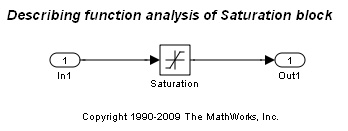
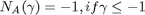
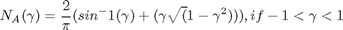
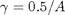
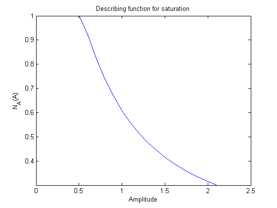
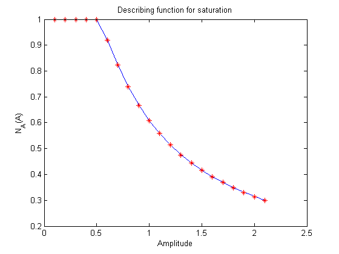
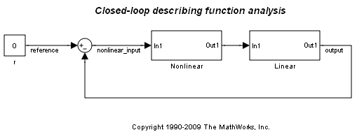

非線形 Simulink モデルの記述関数の解析
このデモでは、周波数応答推定を使用し、飽和の非線形性を持つモデルに対して、正弦波入力の記述関数の解析を実行する方法を説明します。
目次
記述関数の解析の背景
記述関数の解析は、非線形システムの周波数応答を調べるために広く知られている手法です。これは、線形周波数応答解析の延長です。線形システムでは、伝達関数は、入力信号の周波数にのみ依存します。非線形システムでは、正弦波などの入力信号の特定のクラスを非線形要素に適用すると、周波数だけでなく、振幅範囲にも依存する関数によって非線形要素を表すことができます。この関数は、記述関数と呼ばれます。記述関数の解析は、周波数応答の解析からリミット サイクルの予測まで、広範囲に適用されます。
記述関数解析の最も一般的なタイプである正弦波入力の記述関数解析を使用するには、モデルが次の条件を満たしていなければなりません。
- 非線形性が時不変である。
- 非線形性が、入力正弦波に対する応答として、低調波を生成しない。
- システムが非線形性によって生成された低調波を除去する (この条件は通常、フィルター処理仮説と呼ばれます)。
このデモでは、上記のすべての条件を満たしている飽和の非線形性を持つモデルに対して記述関数の解析を実行します。
手順 1: モデルを開く
飽和の非線形性を持つ Simulink® モデルを開きます。
scdsaturationDF
mdl = 'scdsaturationDF';
 手順 2: 飽和の非線形性の記述関数の解析
飽和の非線形性には、次のような正弦波入力の記述関数があります。



ここで、飽和の  は、それぞれ上限が 0.5、下限が -0.5 であり、A は正弦波入力信号の振幅です。
振幅が 0.1 ～ 2.1 で変化する場合、振幅 A に対する記述関数 N_A(A) を計算してプロットします。
A = linspace(0.1,2.1,21); N_A = saturationDF(0.5./A); plot(A, N_A); xlabel('Amplitude');ylabel('N_A(A)');title('Describing function for saturation');
5 rad/s の固定周波数の同じセットの振幅に対して FRESTIMATE を使用し、飽和の非線形性の記述関数を計算できます。飽和の記述関数は、周波数に依存しないため、単一の周波数での解析は十分に実行できます。(固定) 周波数と特定の振幅を持つ sinestream の入力を作成するすべての振幅に対してループを実行し、各反復でこの入力信号を使用して FRESTIMATE を実行します。
w = 5; io(1) = linio('scdsaturationDF/In1',1,'in'); io(2) = linio('scdsaturationDF/Saturation',1,'out'); N_A_withfrest = zeros(size(N_A)); for ct = 1:numel(A) in = frest.Sinestream('Frequency',w,'Amplitude',A(ct)); sysest = frestimate(mdl,in,io); N_A_withfrest(ct) = real(sysest.resp); end plot(A,N_A,A,N_A_withfrest,'r*') xlabel('Amplitude');ylabel('N_A(A)');title('Describing function for saturation'); close_system(mdl);
手順 3: 閉ループの記述関数の解析
周波数範囲に対して閉ループの記述関数の解析を実行することもできます。記述関数を使用して、出力への参照から周波数応答を解析的に計算することで開始できます。これを実行するには、参照の振幅と周波数を考慮して、最初に、非線形性の入力信号 "nonlinear_input" の振幅を計算します。非線形性の入力振幅は、必ずしも参照の振幅と等価ではありません。
bdclose('scdsaturationDF'); scdsaturationDFcl mdl = 'scdsaturationDFcl'; L = zpk([],[0 -1 -10],1); w = logspace(-2,2,50); A_DF = zeros(numel(A),numel(w)); for ct_amp = 1:numel(A) for ct_freq = 1:numel(w) % Compute the amplitude to nonlinearity solving the analytical % equation A_DF(ct_amp,ct_freq) = fzero(@(A_DF) solveForSatAmp(A_DF,L,w(ct_freq),A(ct_amp)),A(ct_amp),... optimset('Display','off')); end end
次に、各振幅の記述関数を持つ出力への参照から閉ループの解析的な周波数応答を計算して、それを FRD 配列に保存します。
L_w = freqresp(L,w); for ct = 1:numel(A) N_A = saturationDF(0.5./A_DF(ct,:)); cl_resp = N_A(:).*L_w(:)./(1+N_A(:).*L_w(:)); cl(1,1,ct) = frd(cl_resp,w); end
上記の飽和の記述関数の解析と同様の方法で、FRESTIMATE を使用して入力への参照から閉ループの周波数応答を取得できます。
io(1) = linio('scdsaturationDFcl/r',1,'in'); io(2) = linio('scdsaturationDFcl/Linear',1,'out'); for ct = 1:numel(A) in = frest.Sinestream('Frequency',w,'Amplitude',A(ct),... 'NumPeriods',10,'SettlingPeriods',7); cl_withfrest(1,1,ct) = frestimate(mdl,in,io); end
解析的に計算された閉ループ振幅をいずれかの FRESTIMATE を使用してプロットできます。
h = figure;bodemag(cl,'b',cl_withfrest,'r'); annotation(h,'textarrow',[0.64 0.58],[0.64 0.58],'String','Increasing A');

モデルを閉じます。
bdclose('scdsaturationDFcl')